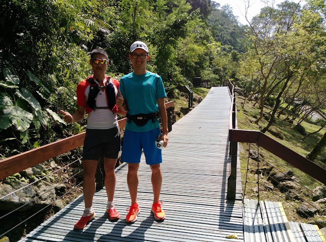

潛意識的力量 & 越野下坡技巧
其中一天我和晏慶一同挑戰太魯閣的「大禮大同」步道，但因為我也沒跑過，所以也不知道路況，只是在遊客中心申請入山時問了申辦的警員，有了粗淺的認識就進去了。有越野好手在旁，我躍躍欲試，也不擔心路況，只想要好好地在山林裡跑一跑。可惜回程時我的體能不足、補給也帶得不夠，回程時有低血糖症狀，害晏慶等我，無法盡興地跑。但好久沒有這樣耗盡力氣的體驗了，雖然很累，但回家洗完澡後卻有「好乾淨」的感覺，也許這就是山林的洗禮吧！

從登山口到大同部落的總距離官方寫 1 萬 600 公尺(但我和晏慶的 GPS 錶上都顯示 9.2 公里左右)，總爬升 1068 公尺(入山口的海拔是 60 公尺，大同部落海拔 1128 公尺)。去程雖然是上坡，但體力還有，就跟著晏慶跑，1 小時 37 分就抵達(中間還休息拍照與找人家裝水)；但回程時一來我血糖與精神不濟，二來下坡我反而不敢下太快，所以反而花了兩個多小時才下山。但一路上和晏慶談談說說，也甚是暢快。
印象最深刻的是晏慶談及他的一位心靈導師，分享了「潛意識的力量」非常強大，強大到可以提升運動表現。我非常相信這個論點的。這也是心志訓練的重點所在：開發心志裡未知的力量。
晏慶分享這位導師說：「潛意識浮出水面影響人生的開關可以分為兩類，其一是不斷反覆的思想；其二是人生發生重大事件後造成心靈的翻轉。」
不斷反覆的思想訓練是我們可以練習的沒錯(但這要知道方法與堅持不懈的毅力)；可是破壞人生規律的重大事件在一般人看來是無法訓練。不過，我聽到晏慶分享後想到的是類似 226 超鐵、跑環島、12~24 小時超馬、100 公里以上超馬這種折磨人身心的運動模式。我想到過去每每在這種「自找的重大事件」之後，自己似乎都會像是變了一個人似的，精神力會變得特別強大……這就是潛意識被挖出水面後的力量嗎？但不久後這種浮出水面的力量就會消失。
很久沒把自己操到極限的邊緣了，雖然那天自己很蠢地帶了太少補給上山，還好路上有晏慶相陪與好心的山友分享了巧克力、餅乾和糖果給我，後半程才恢復精力。但這種處在精疲力竭邊緣的感覺卻讓我懷念……好像很變態，但這是否就是(自找的)人生重大事件呢？我想我這個健忘的人怎麼也忘不了那天發生的事。如果一路順遂的話，那段路程的經歷一定會被我拋諸腦後的。
這次也學到了：
→下坡時在山徑上踩點的判斷方式、
→越野跑鞋與路跑鞋的差異、
→陡下坡不外八而是整個側身、
→下坡騰空時要提臂保持平衡、
→視線要看近看遠不要一直盯著一個點……等技巧。
愈認識一項運動愈覺得有趣，這讓我燃起了更想再次入山跑的動機，如果下次港對港有再度成行的話(也沒撞到行程)，倒是很想參與。當然要先把自己的體能準備好才行，以免再次拖累。
旅途中我們不只談了跑步。也談了國內外知名選手的奇人異事、以及對自然保護、法規、公聽會、越野跑在日本與臺灣的發展近況。也談了將來一起合作的計畫，期待這個計畫可以成行，一起為越野與登頂挑戰盡一份心力。
在上山途中晏慶驚呼「怎麼對岸的山上被挖了一個洞」，在一旁感嘆良久。我只是覺得可惜與無能為力，反而不像他露出痛心的表情。回家後看到吳明益老師發文討論了「亞泥花蓮廠」跟「太魯閣國家公園」之間的關係，對老師的深入研究與仗義直言很是感佩(明益老師的文章：https://goo.gl/xe0bJB)。也立即填了老師貼出的連署書。
●以下是這次議題的連署網頁，如果您支持以下訴求歡迎參與：
連署訴求：https://goo.gl/sav3rI
一、撤銷亞泥新城山礦權違法展限，依法踐行相關程序後再行審定
二、修正黑箱礦業法
三、礦權展限需踐行原住民族基本法第 21 條程序
四、礦權展限需重作礦業用地核定
五、建立並落實當地居民程序參與
六、礦業開發審查資料進度全面上網公開
●由「地球公民基金會」彙整的相關資訊：
https://www.cet-taiwan.org/category/305